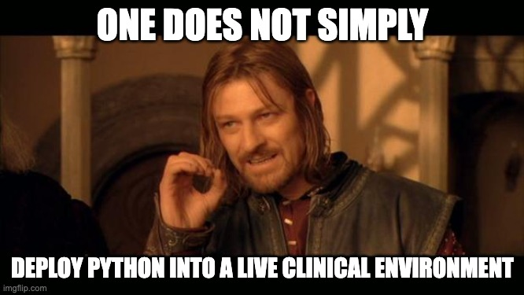

Deploying Python in production: containers, kubernetes and embracing yaml
In 2023
In 2025
CV
- Principal Engineer, Newton's Tree
- Technical Lead, Outcomes Based Healthcare
- Data/Technology Lead, NHS AI Lab (NHSX)
- CTO/CPO, Decoded
- PhD in "nanomedicine" (Biological Physics)


Source: docker.com/resources/what-container/
Source: https://memory-beta.fandom.com/wiki/Borg_cube
Source: https://aws.plainenglish.io/kubernetes-architecture-c93cb9c798d8
Live demo: nhs-number
Disclaimer
- DCB 0129 (manufacturer) e.g. QMS
- DCB 0160 (hospital)
- UK GDPR
- UK MDR
step 1: create a web-based service
import fastapi
import nhs_number
@app.get("/validate", response_model=ValidationResponse)
def validate(number: str = Query(..., description="NHS number to validate")):
return {"valid": nhs_number.is_valid(number)}
...
$ uvicorn nhs_number_api.main:app --host 0.0.0.0 --port 8888
step 2: create a container
FROM python:3.11-slim
WORKDIR /app
COPY pyproject.toml ./
COPY src ./src
RUN pip install --no-cache-dir .
CMD ["uvicorn", "nhs_number_api.main:app", "--host", "0.0.0.0", "--port", "8888"]
$ docker build -f Containerfile -t nhs-number-api:v0.0.1 .
$ docker run --rm -p 8888:8888 --read-only nhs-number-api:v0.0.1
$ docker push ghcr.io/amadeuspzs/nhs-number-api/nhs-number-api:v0.0.1
step 3: deploy the container into a kubernetes (k8s) cluster
apiVersion: apps/v1
kind: Deployment
metadata:
name: nhs-number-api
spec:
replicas: 1
template:
spec:
containers:
- name: nhs-number-api
image: ghcr.io/amadeuspzs/nhs-number-api/nhs-number-api
tag: v0.0.1
ports:
- containerPort: 8888
name: http
$ kubectl apply -f deployment.yaml
$ kubectl get pods -n nhsrpysoc
apiVersion: v1
kind: Service
metadata:
name: nhs-number-api
spec:
type: ClusterIP
selector:
app: nhs-number-api
ports:
- name: http
port: 80
targetPort: 8888
protocol: TCP
$ kubectl apply -f service.yaml
apiVersion: networking.k8s.io/v1
kind: Ingress
metadata:
name: nhs-number-api
spec:
rules:
- host: nhs-rpysoc.rsna.newtonstree.ai
http:
paths:
- path: /
pathType: Prefix
backend:
service:
name: nhs-number-api
port:
name: http
tls:
- hosts:
- nhs-rpysoc.rsna.newtonstree.ai
$ kubectl apply -f ingress.yaml
Takeaways / Q&A
- 👉 Containers = reproducible, self-contained, and versioned
- 👉 k8s = high availablility container deployment
- 👉 there are many ways of deploying resources in k8s
- 👉 yaml = Infrastructure as Code (IaC) and GitOps
- 🧑💻 https://github.com/amadeuspzs/nhs-rpysoc-2025-deploy-python
- 💾 https://github.com/amadeuspzs/nhs-number-api